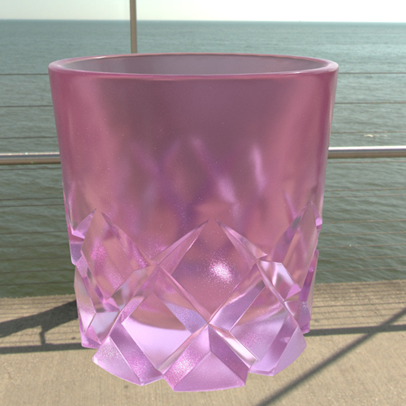

使用标准曲面着色器，可以轻松创建反射材质（例如，金属）或折射材质（例如，玻璃）。以下部分介绍了可以调整的一组关键属性，以快速获得想要的结果。
调整着色器时，可以在 Hypershade 材质查看器或 Arnold 渲染视图中预览结果。
创建玻璃材质
在此场景中，将 Arnold 天穹灯光映射到 .hdr 图像以提供基于图像的环境照明。有关天穹灯光的详细信息，请参见 Ai 天穹灯光。
需要调整的关键属性位于标准曲面 “属性编辑器”(Attribute Editor)的“基础”(Base)、“镜面反射”(Specular)和“透射”(Transmission)区域中。
-
选择模型，然后单击鼠标右键并选择“指定收藏材质 > 标准曲面”(Assign Favorite Material > Standard Surface)。现在，standardSurface2 着色器已指定给玻璃模型。
-
在标准曲面的 “属性编辑器”(Attribute Editor)中，将“镜面反射 > 粗糙度”(Specular > Roughness)减小为 0。
如果要对透明玻璃建模，则无需设置粗糙度值。如果减小此值，则镜面反射会看起来更光亮，渲染速度也会更快。
-
若要使玻璃透明，请调整“透射 > 权重”(Transmission > Weight)。这样，灯光可以穿过表面进行散射，非常适用于对玻璃或水进行建模。
将此选项设置为较高的值，例如，对于玻璃，设置为 0.95。
-
减小“基础 > 权重”(Base > Weight)的值，使“基础 > 权重”(Base > Weight)和“透射 > 权重”(Transmission > Weight)值之和等于 1。也就是说，将“基础 > 权重”(Base > Weight)设置为 0.05，因为“透射 > 权重”(Transmission > Weight)已设置为 0.95。
默认情况下，标准曲面着色器能量守恒：其所有层是平衡的，因此传出曲面的灯光量不会超过传入的灯光量。通过将层权重设置为 1，可确保材质能量守恒且材质在不同照明中将按预期做出反应。
-
增加“镜面反射 > 权重”(Specular > Weight)以捕捉来自直接光源的镜面反射贡献。权重越高，镜面反射高光越亮。
在下图中，镜面反射权重设置为 1。
-
若要使玻璃变得更加多样化，请调整属性（例如，“透射 > 颜色”(Transmission > Color)）以对玻璃进行染色。
-
若要创建磨砂玻璃而非透明玻璃，请增加“镜面反射 > 粗糙度”(Specular > Roughness)。
粗糙度值为 0 时，会产生极为清晰的镜面反射，而较高的值会产生更接近于漫反射的反射。在此示例中，使用的值为 0.177。

创建金属
在此场景中，将 Arnold 天穹灯光映射到 .hdr 图像以提供基于图像的环境照明。有关天穹灯光的详细信息，请参见 Ai 天穹灯光。
需要调整的关键属性位于标准曲面 “属性编辑器”(Attribute Editor)的“基础”(Base)、“镜面反射”(Specular)和“涂层”(Coat)区域中。
-
选择模型，然后单击鼠标右键并选择“指定收藏材质 > 标准曲面”(Assign Favorite Material > Standard Surface)。现在，standardSurface2 着色器已指定给材质球模型。

-
在标准曲面的 “属性编辑器”(Attribute Editor)中，将“镜面反射 > 粗糙度”(Specular > Roughness)减小为 0 以创建铬合金材质。
“粗糙度”(Roughness)值越小，反射越清晰。值为 0 时会产生极为清晰的镜面反射。
-
将“镜面反射 > 权重”(Specular > Weight)设置为 0.8，以捕捉来自直接光源的镜面反射贡献。值越大，生成的反射高光越亮。
-
将“基础 > 金属度”(Base > Metalness)设置为 1，以将曲面转化为金属。
-
设置“基础 > 颜色”(Base > Color)以对金属进行染色。
-
如果要对车漆建模，可以通过添加“镜面反射 > 粗糙度”(Specular > Roughness)来创建无光泽面（而非光泽面）。
在此示例中，“粗糙度”(Roughness)设置为 0.45。
-
然后，可以通过调整“涂层 > 权重”(Coat > Weight)将反射透明涂层添加到金属。
对于将透明涂层添加到车漆，或者将层压、保护或油滑薄膜添加到曲面，这一定非常有用。
在此示例中，“涂层”(Coat)设置为 0.3。

-
若要模糊此薄膜，请调整“涂层 > 粗糙度”(Coat > Roughness)。
在此示例中，“粗糙度”(Roughness)设置为 0.25。
注： “镜面反射 > 粗糙度”(Specular > Roughness)仅影响对象金属度的方向和环境灯光贡献；它不影响涂层。必须分别调整金属的粗糙度和涂层的粗糙度。
使用天顶灯光的提示和技巧
默认情况下，用于环境照明的 .hdr 图像将包含在背景中。若要从最终渲染中排除此图像，请选择 aiSkyDomeLightShape 的 “属性编辑器”(Attribute Editor)，然后将“可见性 > 摄影机”(Visibility > Camera)设置为 0。
此外，默认情况下，环境照明产生的反射和折射也将烘焙到渲染中。如果计划将渲染合成到中性背景，则可能需要排除这些反射和折射。若要执行此操作，请选择 aiSkyDomeLightShape 的 “属性编辑器”(Attribute Editor)，然后将“可见性 > 透射”(Visibility > Transmission)设置为 0。